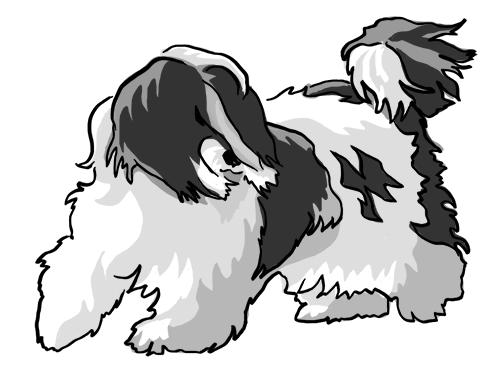
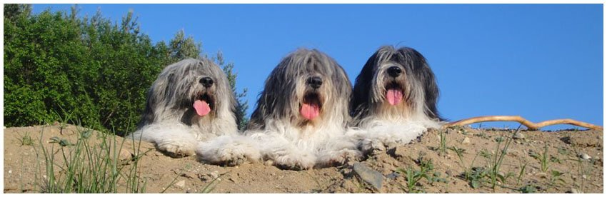

Hodowla polskich owczarków nizinnych

Witaj na mojej stronie poświęconej rodzinnej hodowli Polskich Owczarków Nizinnych.
PON'y są dalekimi potomkami psa z tybetu,
w XX wieku został nazwany przez Anglików
terierem tybetańskim, choć nie miał z nim nic wspólnego.
Te kudłate średniej wielkości psy,
towarzyszyły stadom owiec, kóz i jaków.
Do Polski przodkowie tej rasy dotarli ok. IX wieku
naszej ery. Do cech charakteru można zaliczyć
wyjątkową wierność, inteligencję, odwagę,
czujność
oraz bardzo dobry węch.
PON - Polski Owczarek nizinny
Tam gdzie pastwiska są na Nizinach,
Polski Owczarek straż wiernie trzyma,
I jego pieczy każdy z pasterzy,
Może swe stado śmiało powierzyć

EPIKA JUHASKA Banciarnia FCI Pasąca owce

Po Wypasie, zasłużony odpoczynek :)

© Michał Pawelski, kom: 515 408 335, m.pawelski1907@gmail.com